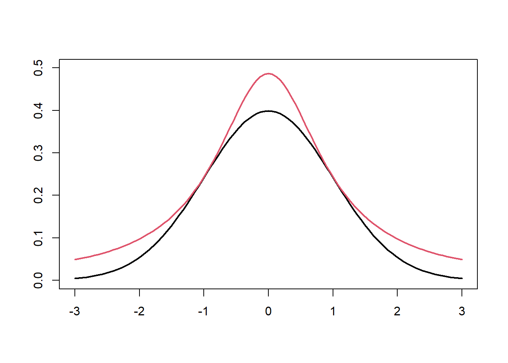
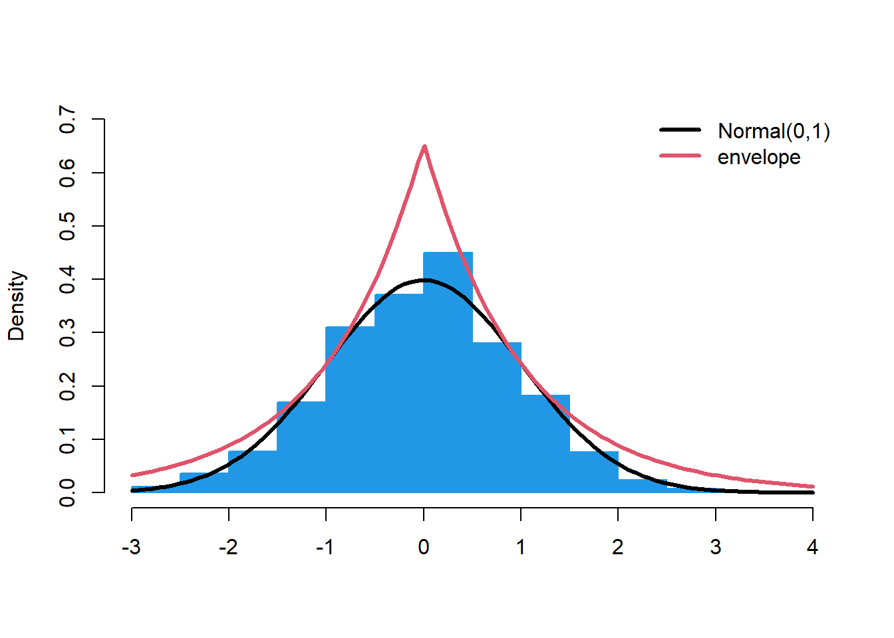
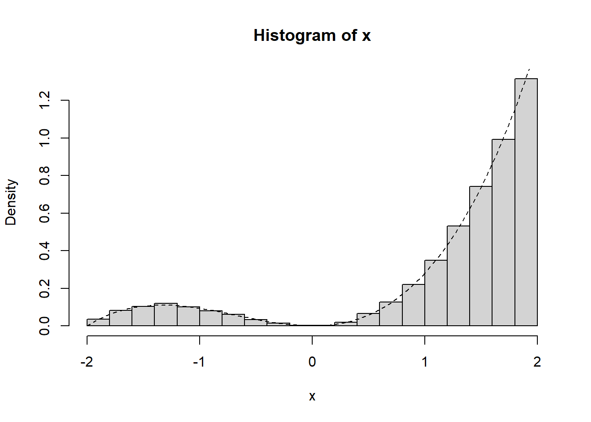
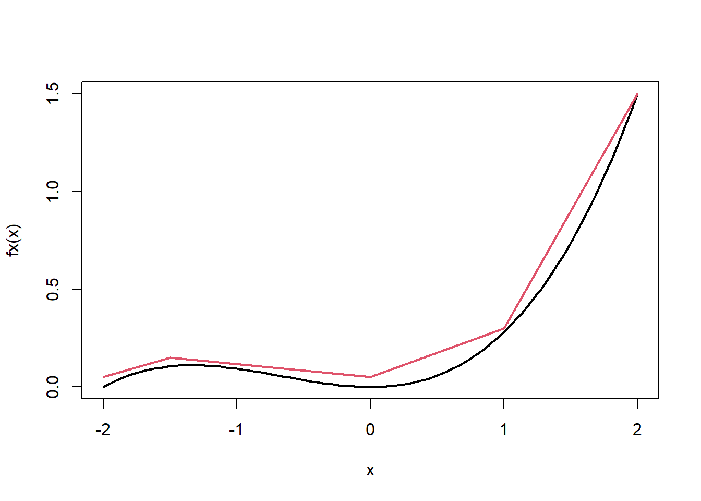
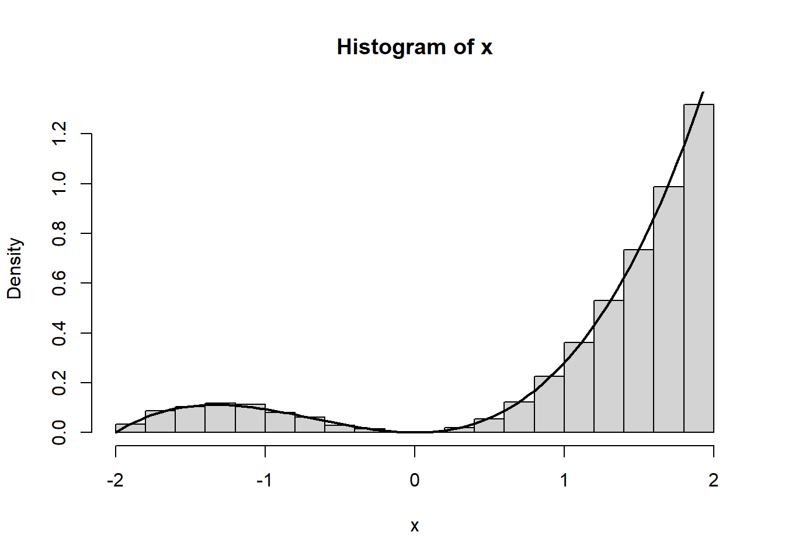
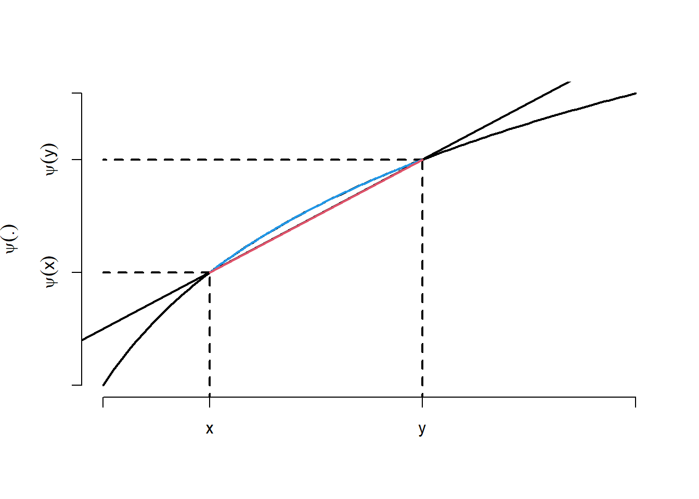
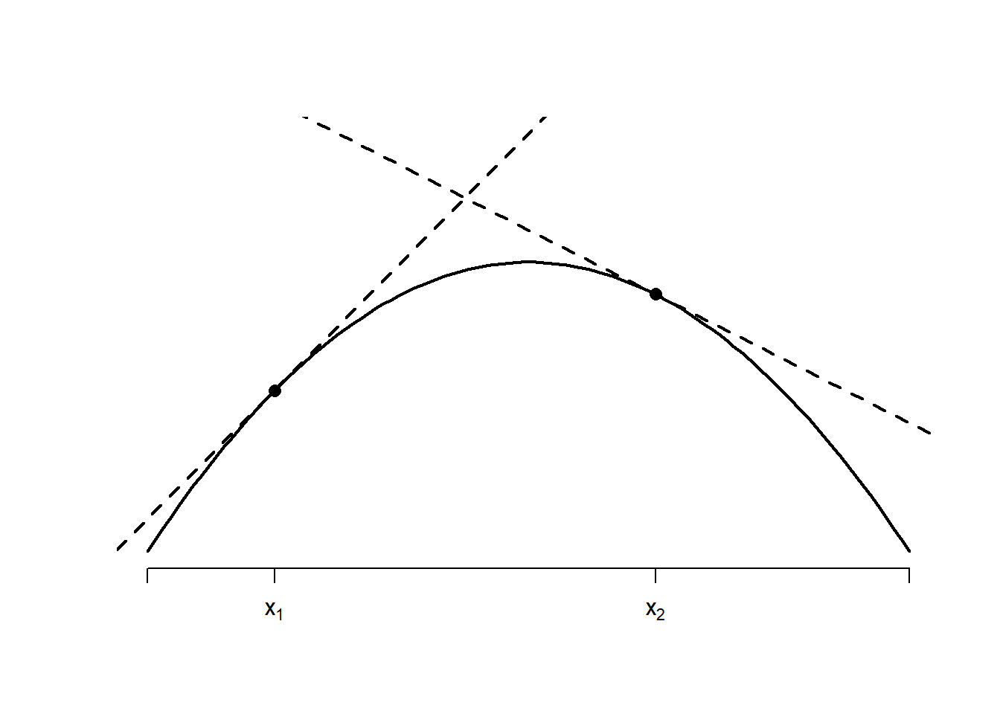
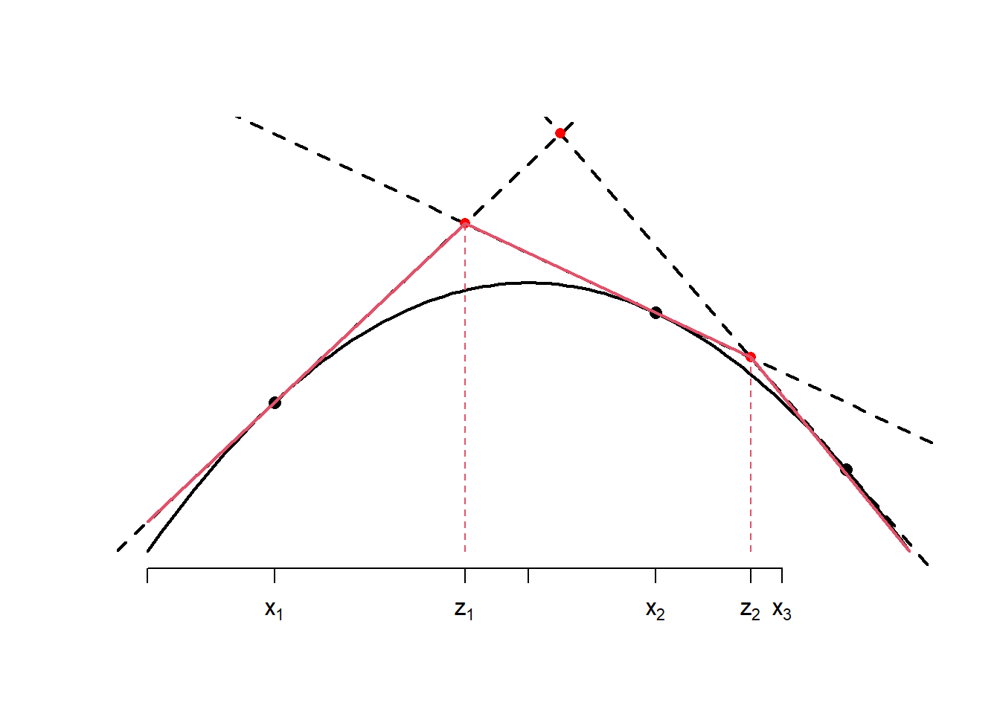
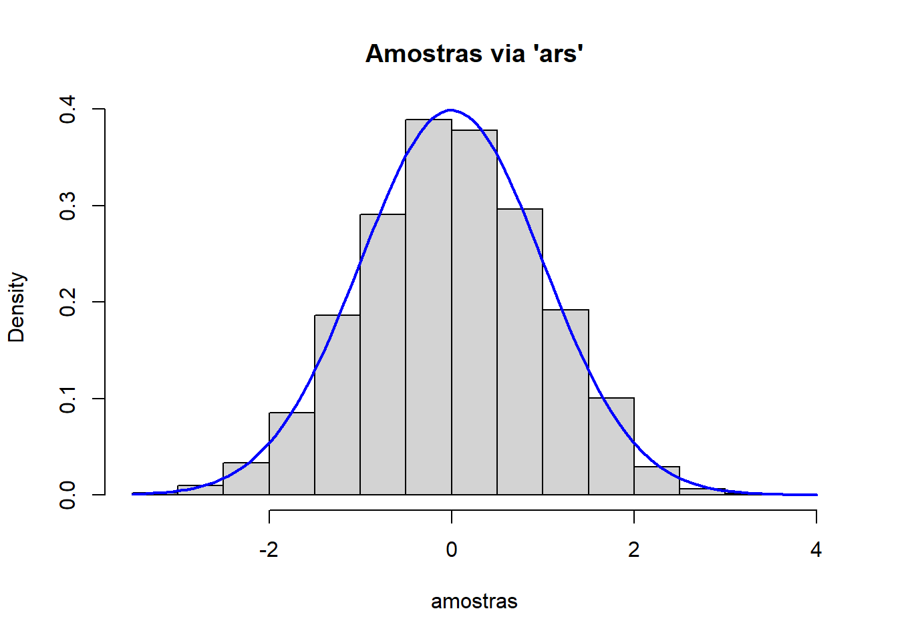

7 O método da aceitação/rejeição
7.1 Introdução ao método
Considere que desejamos simular amostras da variável aleatória contínua \(X\), com função densidade dada por \(f(x)\). O método da aceitação/rejeição usa um simulador de uma variável aleatória com densidade \(g(.)\). O objetivo é selecionar amostras simuladas de \(Y\) que são estocasticamente equivalentes à \(X\).Esta é uma das técnicas mais importantes de geração de números aleatórios.
A ideia básica deste método é escolher uma variável \(Y\) fácil de simular cuja densidade \(g(.)\) satisfaz
\[f(x)\leq cg(x)\] para todo \(x\), para algum c>0. A função de densidade \(g(.)\) é denominada proposta ou instrumental, enquanto que \(cg(.)\) é denominada função majorante ou envelope.
Algoritmo. Método da aceitação/rejeição
Gere \(y\sim g(.)\) e \(u\sim\hbox{Uniforme}(0,1)\).
Se \(u< f(y)/cg(y)\), faça \(x=y\). Senão, volte ao passo 1.
Vamos mostrar que o algoritmo de fato gera amostras de \(X\), com \(X\in D\subseteq \mathbb{R}^d\). Note que a condição do passo 2 pode ser reescrita como
\[ucg(y)<f(y).\]
Seja \(Z=Ucg(Y)\). Então, \(Z|Y=y\sim \hbox{Uniforme}(0,cg(y))\) e
\[f_{Z,Y}(z,y)=f_{Z|Y}(z)g(y)=\frac{1}{cg(y)}I(0<z<cg(y))g(y)=\frac{1}{c}I_S((z,y))\]
ou seja, \((Z,Y)\sim\hbox{Uniforme}(S)\) onde
\[S=\{(z,y):y\in D,0<z<cg(y)\}.\]
Agora, como \(c\geq 1\) é uma constante que garante que \(f(x)\leq cg(x)\) para todo \(x\), teremos que \(V\subset S\), onde
\[V=\{(z,y):y\in D,0<z<f(y)\}.\]
Logo, \((Z,Y)|(Z,Y)\in V\sim\hbox{Uniforme}(V)\) e, portanto, \(Y|(Z,Y)\in V\sim f(.).\)
Note que o método da aceitação/rejeição é uma aplicação direta do método da uniforme multivariada com marginais não uniformes. Lembremos que a probabilidade de aceitar um par simulado é
\[\frac{Vol(V)}{Vol(S)}=\frac{1}{c},\]
então quanto mais próximo o envelope \(cg(.)\) está de \(f(.)\), melhor é o método AR. A figura abaixo ilustra os conceitos vistos até aqui.
Example 7.1 Considere o problema de simular de \(X\sim\)Normal(0,1) através do método da aceitação/rejeição utilizando como proposta a distribuição Laplace(\(a\)), cuja função densidade é dada por
\[g(y)=\frac{a}{2}e^{−a|y|},\]
com \(y\in\mathbb{R}\) e \(a>0\). Note que é fácil simular de \(Y\) pois
\[G(y)=\left\{\begin{array}{ll}\frac{1}{2}e^{ay},& y\leq 0 \\ 1−\frac{1}{2}e^{−ay},&y>0\end{array}\right.\]
o que implica em
\[G^{−1}(u)=\left\{\begin{array}{ll}\frac{\log(2u)}{a},& u\leq \frac{1}{2}\\ -\frac{\log(2(1−u))}{a},& u>\frac{1}{2}\end{array}\right.\]
o que implica que a proposta pode ser facilmente simulada via método da inversão. Teremos
\[\begin{align}\frac{f(x)}{g(x)}&=\frac{\frac{1}{\sqrt{2\pi}}e^{-\frac{x^2}{2}}}{\frac{a}{2}e^{-a|x|}}=\frac{1}{a}\sqrt{\frac{2}{\pi}}e^{-\frac{x^2}{2}+a|x|}=\frac{1}{a}\sqrt{\frac{2}{\pi}}e^{-\frac{|x|^2}{2}+a|x|}\\ &=\frac{1}{a}\sqrt{\frac{2}{\pi}}e^{-\frac{1}{2}(|x|-a)^2+\frac{a^2}{2}}\leq \frac{1}{a}\sqrt{\frac{2}{\pi}}e^{\frac{a^2}{2}}\end{align}\] e, através do cálculo diferencial, pode-se mostrar facilmente que o mínimo de \(a^{−1}e^{a^2/2}\) é atingido em \(a=1\). Logo
\[\frac{f(x)}{g(x)}≤\sqrt{\frac{2}{\pi}}e^{\frac{1}{2}}<1,3155\]
Fazendo \(c=1,3155\), teremos que o número médio de tentativas até o primeiro aceite será 1,3155.
# simulador da Laplace(0,1)
r_Laplace <- function(){
u <- runif(1)
if (u < 0.5) {
x <- log(2*u)
} else {
x <- -log(2*(1-u))
}
return(x)
}
# simulador da Normal(0,1) usando Laplace(0,1) como proposta
# simulador da normal via método AR (proposta Laplace)
r_norm <- function(){
x <- NA
while( is.na(x)){
# gerando um candidato
y <- r_Laplace()
# razao f/c*g
razao <- sqrt(2/pi)*exp(-.5*y^2 + abs(y) )/1.3155
# verificando se o candidato é aceito
u <- runif(1)
if( u < razao){ x <- y}
}
return(x)
} Abaixo ilustramos o algoritmo acima com uma amostra simulada de tamanho 1.000.
# amostra simulada
x <- sapply( 1:1000, function(x) r_norm() )
hist(x, freq = F, main ="", col = 4, border = 4, ylim=c(0,.7), xlab = "")
curve(dnorm(x), add = T, lwd = 3)
envelope <- function(x) 1.3155*(1/2)*exp(-abs(x))
curve(envelope(x),add=T, lwd = 3, col = 2)
legend("topright", c("Normal(0,1)","envelope"), col =c(1,2),lwd = 3, bty = "n")
Exercício Considere que \(X\) é uma variável aleatória contínua com densidade \[f(x)=\frac{1}{4}x^4(1-x)^3,\] com \(x\in(0,1)\). Considerando a proposta Uniforme(0,1).
Encontre a função envelope
Escreva um algoritmo para simular uma amostra de tamanho 5000 de \(f(x)\) utilizando o método da aceitação/rejeição.
Exercício. Dizemos que \(X\) tem distribuição normal assimétrica se função densidade é dada por
\[f(x)=2\phi(x)\Phi(ax),\] onde \(x\in\mathbb{R}\), \(\phi(.)\) e \(\Phi(.)\) são a função densidade e distribuição da normal padrão e \(a\in\mathbb{R}\). O parâmetro \(a\) é denominado assimetria, sendo que \(f(x)\) se torna a normal padrão quando \(a=0\).
Utilizando como proposta a distribuição normal, construa um simulador para gerar amostras de \(f\) utilizando o método AR. Qual é o número esperado de tentativas até obter um sucesso?
Exercício Considere a simulação de uma distribuição Gama(2, 1), cuja densidade. é:
\[f(x) = x e^{-x}, \quad \text{para } x > 0\]
Queremos usar uma distribuição Exponencial(\(\lambda\)) como proposta \(g(x)\). A densidade da proposta é:
\[g(x) = \lambda e^{-\lambda x}, \quad \text{para } x > 0\]
A eficiência do método A/R depende da constante \(c = \sup_x \frac{f(x)}{g(x)}\). Para uma proposta \(g(x)\) ser válida, \(c\) deve ser finito. Para ser eficiente, \(c\) deve ser o menor possível. Com base nesses princípios:
Encontre \(c(\lambda)\): Para um \(\lambda > 0\) genérico, encontre a constante \(c\) em função de \(\lambda\). Ou seja, encontre \(c(\lambda) = \max_x \frac{f(x)}{g(x)} = \max_x \frac{x e^{-x}}{\lambda e^{-\lambda x}}\).
Determine o \(\lambda\) ótimo: O método A/R mais eficiente usará o valor de \(\lambda\) que minimiza \(c(\lambda)\). Encontre o valor \(\lambda^*\) que torna a taxa de aceitação (inversamente proporcional a \(c\)) a maior possível.
Calcule \(c^*\): Qual é o valor da constante \(c\) (e a probabilidade de aceitação) quando se utiliza o \(\lambda^*\) ótimo encontrado em (b)?
7.2 Construindo a densidade proposta com uma função linear por partes
No método da aceitação/rejeição para simular uma amostra de \(f\), devemos encontrar uma função de densidade \(g\), fácil de simular, que satisfaça
\[f(x)\leq cg(x)\]
para algum \(c>0\) e para todo \(x\) no suporte de \(f\). Agora, seja \(g^∗(.)\) uma função real positiva que satisfaz
\[f(x)\leq g^*(x),\]
para todo \(x\). Note que $g^* é a função envelope. Então, sem perda de generalidade, podemos fazer
\[f(x)\leq \underbrace{\frac{g^*(x)}{\int g^*(t)dt}}_{g(x)} \underbrace{\int g^*(t)dt}_{c}.\]
Portanto, podemos primeiro construir uma função envelope \(g^*(x)\) e em seguida transformá-la na densidade proposta. Envelopes podem ser construídos utilizando uma função linear por partes, uma vez que é fácil simular desta distribuição.
Uma função linear por partes é uma função cujo gráfico é composto por segmentos de reta. Formalmente, dizemos que a função \(g^*(x)\) definida no intervalo fechado \(x \in [a, b]\) é linear por partes se existir uma partição do intervalo \([a, b]\), definida por um conjunto de \(n+1\) pontos:\(a = t_0 < t_1 < t_2 < \ldots < t_n = b\) tal que, para cada sub-intervalo \([t_i, t_{i+1}]\) (onde \(i = 0, 1, \ldots, n-1\)), a função envelope \(g^*(x)\) é uma função linear:
\[g^*(x) = m_i x + d_i \quad \text{para } x \in [t_i, t_{i+1}]\]
onde \(m_i\) (a inclinação) e \(d_i\) (o intercepto) são constantes reais específicas para aquele \(i\)-ésimo intervalo.
Estamos interessados em funções lineares por partes contínuas, o que implica em
\[m_{i-1} t_i + d_{i-1} = m_i t_i + d_i \quad \text{para todo } i = 1, 2, \ldots, n-1\]
Portanto, a densidade da proposta é dada por
\[g(x)= \frac{g^{*}(x)}{\int_a^b g^{*}(x)dx}=\frac{g^{*}(x)}{\sum_{i=0}^{n-1}\frac{ g^{*}(t_i) + g^{*}(t_{i+1})}{2} (t_{i+1} - t_i)}=\frac{g^{*}(x)}{c}.\] Para simular desta proposta, observe que, para \(x\in(t_j,t_{j+1}]\),
\[\begin{align}G(x)&=\int_a^x g(y)dy=\frac{1}{c}\int_a^{x}g^{*}(y)dy\\&=\frac{1}{c}\underbrace{\sum_{i=0}^{j-1}\frac{g^{*}(t_i)+g^{*}(t_{i+1})}{2}(t_{i+1}-t_i)}_{c_{j-1}}+\frac{1}{c}\int_{t_j}^x(ym_j+d_j)dy\end{align}\] o que implica em \[G(x)= c_{j-1}+\frac{1}{c}\left[\frac{m_j}{2}(x^2- t_j^2)+d_j(x-t_j)\right].\] Portanto, podemos simular da proposta pelo método da inversão, conforme o algoritmo abaixo:
- (Preliminares) Para \(j=0,\ldots,n-1\), calcule
\[A_j=\int_{t_{j}}^{t_{j+1}}(m_j x +d_j)dx=\frac{1}{2}m_j(t_{j+1}^2-t_{j} ^2)+d_j(t_{j+1}-t_{j})\] e calcule \(c=\sum_{i=0}^{n-1}A_i\). Faça \(c_0=0\) e, para \(j=1,\ldots,n\), calcule \[c_j=c_{j-1}+\frac{A_{j-1}}{c}.\]
Gere \(u\sim\hbox{Uniforme}(0,1)\)
Determine \(j\) tal que \(c_{j}<u<c_{j+1}\). O valor de \(x\) simulado é a raiz, dentro de \([t_j,t_{j+1}]\), da equação \(G(x)=u\). Como \(G(x)\) é quadrática em \(x\) neste intervalo, podemos encontrar \(x\) resolvendo a equação \(Ax^2+Bx+C=0\).
Após ter \(x\) gerado pela proposta, podemos fazer o passo de aceitação rejeição:
Simule \(y\) da proposta e \(u\sim\hbox{Uniforme}(0,1)\)
Se \(u< f(y)/g^*(y)\), aceite \(x\) como proveniente de \(f\) e faça \(x=y\). Senão, retorne ao passo 1.
Funções auxiliares. Considere que os vetores xp e yp formam um envelope para a função \(f\). A função abaixo implementa o evelope \(g^{*}(x)\) baseado nesses pontos:
envelope <- function(xp, yp, x) {
# Verificação de conformidade dos vetores
if (length(xp) != length(yp)) {
stop("Os vetores 'xp' e 'yp' devem ter o mesmo comprimento.")
}
if (length(xp) < 2) {
stop("São necessários pelo menos 2 pontos para a interpolação.")
}
# A função 'approx' faz exatamente a interpolação linear
resultado_interp <- approx(x = xp, y = yp, xout = x)
# Para x, a função retorne g*(x) baseada em (xp, yp)
return(resultado_interp$y)
}A próxima função cria o gerador da proposta \(g(x)\) baseada no envelope. Essa função calcula \(A_j\) e \(c_j\) no Passo 0. Criar essa função separada do simulador evita que essas constantes sejam recriadas constantemente dentro do loop do método da aceitação/rejeição.
criador_do_simulador_proposta <- function(xp, yp, n = 1) {
# Verificação de conformidade dos vetores
if (length(xp) != length(yp)) {
stop("Os vetores 'xp' e 'yp' devem ter o mesmo comprimento.")
}
k <- length(xp)
if (k < 2) {
stop("Você precisa de pelo menos 2 pontos (um segmento) para definir a envelope.")
}
# Número de segmentos lineares
n_segmentos <- k - 1
# Renomear, seguindo a notação do contexto
t_i <- xp
g_star_t_i <- yp
# Cálculo de (m_j) e (d_j) para cada segmento j
delta_t <- t_i[2:k] - t_i[1:n_segmentos]
delta_g_star <- g_star_t_i[2:k] - g_star_t_i[1:n_segmentos]
m_vec <- delta_g_star / delta_t
d_vec <- g_star_t_i[1:n_segmentos] - m_vec * t_i[1:n_segmentos]
# Calculo de (A_j)
Aj_vec <- (g_star_t_i[1:n_segmentos] + g_star_t_i[2:k]) / 2 * delta_t
# Calcular a constante de normalização c
c_total <- sum(Aj_vec)
# Calcular as probabilidades de cada segmento
prob_segmento <- Aj_vec / c_total
# Calcular as probabilidades acumuladas (c_j)
c_j_vec <- c(0, cumsum(prob_segmento))
# --- Montar o objeto gerador ---
gerador <- list(
t_i = t_i,
m_vec = m_vec,
d_vec = d_vec,
c_total = c_total,
c_j_vec = c_j_vec,
n_segmentos = n_segmentos
)
return(gerador)
}Por último, a função abaixo gera uma observação a partir da proposta.
simular_proposta <- function(gerador) {
# Passo 1: Gerar U ~ Uniforme(0, 1)
u <- runif(1)
# Encontra o índice 'j' do segmento (1-based)
j <- findInterval(u, gerador$c_j_vec, rightmost.closed = TRUE)
# Recuperar os parâmetros do gerador
m_j <- gerador$m_vec[j]
d_j <- gerador$d_vec[j]
t_j <- gerador$t_i[j]
c_j_cumul <- gerador$c_j_vec[j] # Prob. acumulada até t_j
# Resolver G(x) = u (equação quadrática: Ax^2 + Bx + C = 0)
A <- m_j / (2 * gerador$c_total)
B <- d_j / gerador$c_total
C <- c_j_cumul - u - (m_j * t_j^2) / (2 * gerador$c_total) - (d_j * t_j) / gerador$c_total
# Caso 1: Segmento horizontal (m_j = 0 -> A = 0)
if (abs(A) < 1e-10) {
x <- -C / B
} else {
# Caso 2: Segmento inclinado (A != 0)
discriminante <- B^2 - 4*A*C
if (discriminante < 0) discriminante <- 0 # Estabilidade numérica
raiz_disc <- sqrt(discriminante)
r1 <- (-B + raiz_disc) / (2 * A)
r2 <- (-B - raiz_disc) / (2 * A)
# A raiz é a única dentro do intervalo [t_j, t_{j+1}]
t_j_mais_1 <- gerador$t_i[j + 1]
tol <- 1e-9
if (r1 >= (t_j - tol) && r1 <= (t_j_mais_1 + tol)) {
x <- r1
} else {
x <- r2
}
}
return(x)
}Example 7.2 Considere que desejamos simular amostras da variável \(X\) com densidade dada por
\[f(x)= \frac{3}{16}\left(x^2+\frac{1}{2}x^3\right),\] onde \(x\in(-2,2)\). Esta densidade é dada abaixo:
fx <- function(x) (3/16)*(x^2+.5*x^3)
curve( fx(x),-2,2, lwd = 2)
Com um pouco de tentativa e erro, escolhemos os pontos \(x=(-2,-1.5, 0,1,2)\) e \(y=(0.05,0.15,0.05,0.3,1.5)\) para construir o envelope, dado abaixo em vermelho:
fx <- function(x) (3/16)*(x^2+.5*x^3)
curve( fx(x),-2,2, lwd = 2)
xp = c(-2,-1.5,0,1,2)
yp = c(.05,.15,.05,.3,1.5)
lines(xp,yp, col =2, lwd =2)
Vamos criar a função envelope e o simulador da proposta.
g_estrela <- function(x) envelope(xp,yp,x)
gerador <- criador_do_simulador_proposta(xp,yp)Agora, vamos utilizar o método da aceitação/rejeição para obter amostras de \(f(x)\):
B <- 10000 # número de simulações desejadas
x <- array(NA, c(B))
aceitos = 0 # número de simulações aceitas
tentativas = 0 # número de tentativas do AR
while( aceitos < B){
# passo 1
u <- runif(1); y <- simular_proposta(gerador)
# passo 2
tentativas <- tentativas+1
if( u < fx(y)/g_estrela(y) ){
aceitos <- aceitos + 1
x[aceitos] <- y
}
}
#% de aceitação
aceitos/tentativas[1] 0.7858546Abaixo, segue o histograma das simulações em conjunto com a densidade de \(X\).
hist( x, freq = FALSE)
curve( fx(x), add = T, lwd = 2)
Exercício.
Considerando a função densidade dada por
\[f(x)=\frac{16\pi^3}{\pi^2 - 8}x^2\cos(2\pi x),\] com \(x\in(-1/4,1/4)\), construa uma função envelope e simule uma amostra de tamanho 5.000 de \(f(x)\) uitilizando o método da aceitação/rejeição.
Exercício. Mostramos como utilizar o método A/R com o envelope linear por partes quando \(X\) está limitado a um intervalo \([a,b]\). Quando \(X\) está em um intervalo de comprimento infinito, realizamos um truncamento. Para ilustrar, considere que desejamos simular de
\[f(x)=x e^{-x},\] com \(x\in(0,\infty)\).
Truncamento. utilizando os métodos computacionais discutidos no Capítulo 1, encontre o valor \(b\) tal que \[\int_0^b f(x)dx=\tau,\] onde \(\tau\) é escolhido para ser representativo para a distribuição. Assuma que \(100\tau\%=99,9999\%\), o que implica que estamos ignorando eventuais pontos no intervalo \((b,\infty)\), que ocorrem com probabilidade \(1-\tau=0,0000001\).
Simulação.Utilize o método A/R com envelope linear por partes, considerando intervalo \([a,b]\).
7.3 O método da aceitação/rejeição adaptativo
Nessa seção, introduzimos o conceito de função densidade log-côncava. Para essas distribuições, mostramos que é possível construir uma densidade proposta dinamicamente.
7.3.1 Distribuição log-côncava
Dizemos que a função \(\psi(x)\) é côncava no domínio \(D\) se, para qualquer par \((x,y)\in D\) e para qualquer \(a\in(0,1)\)
\[\psi( a x + (1-a)y ) \geq a\psi(x)+(1-a)\psi(y).\]
A figura abaixo mostra a função \(\psi(x)=\log(x)\), que é côncava. É importante notar que, para qualquer função côncava, a imagem do segmento de reta que passa pelos pontos \((x,\psi(x))\) e \((y,\psi(y))\) (representado em vermelho no gráfico) é menor que a imagem de \(\psi(z)\), com \(z\in(x,y)\) (representada em azul).

Se \(\psi(.)\) é diferenciável duas vezes, então ela é côncava se e somente se sua segunda derivada é não-positiva.
Dizemos que uma densidade é log-côncava se ela pode ser expressada como
\[f(x)=e^{\psi(x)},\] onde \(\psi(.)\) é uma função côncava. Existem muitas distribuições com esta propriedade. Por exemplo, distribuição Normal(0,1) pode ser escrita como,
\[f(x)\propto e^{\psi(x)},\] onde \(\psi(x)=-\frac{x^2}{2}\). A derivada segunda de \(\psi(x)\) é igual a -1, logo a densidade da normal padrão é log-côncava.
7.3.2 Método da aceitação/rejeição adaptativo
Para uma densidade log-côncava qualquer, considere que existe \(c\) tal que, para certa densidade proposta \(g(x)\),
\[\frac{f(x)}{g(x)}=\frac{e^{\psi(x)}}{g(x)}\leq c\] então, \[\log\left(\frac{f(x)}{g(x)}\right)\leq \log c\Rightarrow \psi(x)-\log g(x) \leq \log c \Rightarrow \psi(x)\leq \underbrace{\log g(x)-\log c}_{u(x)}.\]
A ideia é construir um envelope \(u(x)\) para \(\psi(x)\) que seja linear por partes, tal que \(\psi(x) \leq u(x)\) para todo \(x\). Definimos então o envelope \(g^*(x) = e^{u(x)}\). Como \(\psi(x) \le u(x)\), temos \(e^{\psi(x)} \le e^{u(x)}\), o que implica \(f(x) \le g^*(x)\). A densidade proposta é então \(g(x) = g^*(x) / c\), onde \(c = \int g^*(t)dt\).
Para entender o método, seja
\[\psi'(x)=\frac{d}{dx}\psi(x).\]
O sinal da derivada primeira dá o sentido da reta que passa tangente ao ponto. Considere os seguintes pontos \(x_1,x_2\), escolhidos de modo harbitrário, mas que satisfazem \(\psi'(x_1)>0\) e \(\psi'(x_2)<0\). Em seguida, encontre as duas retas tangentes a estes pontos. Abaixo ilustramos a ideia.

De modo geral, a reta tangente ao ponto \(x_k\) é escrita como \[t_k(x)= \underbrace{\psi(x_k) - x_k\psi'(x_k)}_{a_k} + \underbrace{\psi'(x_k)}_{b_k} x =a_k + b_k x\]
Seja \(z_1\) o valor no eixo-\(x\) referente à interseção entre as retas \(t_1\) e \(t_{2}\), ou seja,
\[z_1 = \frac{a_{2}-a_1}{b_1 - b_{2}}\] A partir de \(z_1\), podemos definir uma cobertura (upper hull) \(u(x)\) para \(\psi(x)\):
Se \(x < z_1\), então \(u(x)=t_1(x)\)
Se \(x \geq z_1\), então \(u(x)=t_{2}(x)\)

Agora, note que \[\psi(x)\leq u(x)\Rightarrow e^{\psi(x)}\leq e^{u(x)}\Rightarrow f(x)\leq e^{u(x)},\]
portanto \(e^{u(x)}\) é um envelope para \(f(x)\). Defininido \(z_0\) e \(z_2\) como os valores extremos do domínio de \(x\), teremos a proposta \[g(x)= \frac{e^{u(x)}}{\int_{z_0}^{z_2} e^{u(w)}dw}=\frac{e^{u(x)}}{\int_{z_0}^{z_1} e^{t_1(w)}dw + \int_{z_1}^{z_2} e^{t_2(w)}dw}\] Mas note que, para \(x\in(z_{k-1},z_{k})\) (para \(k=0,1\)), \[\int_{z_{k-1}}^x e^{u(w)}dw=\int_{z_{k-1}}^x e^{t_k(w)}dw=\int_{z_{k-'}}^x e^{a_k+b_k x}dx=\frac{e^{a_k}}{b_k}\left[e^{b_kx}-e^{b_k z_{k-1}}\right].\] logo, \[G(x)=G(z_{k-1})+\frac{e^{a_k}}{b_kN}\left[e^{b_kx}-e^{b_k z_{k-1}}\right],\] onde \(N=\int_{z_0}^{z_2} e^{u(w)}dw.\) Portanto, \(x\) pode ser obtido via método da inversão, pois, fazendo \(G(x)=u\), teremos
\[ x=\frac{1}{b_k}\log\left( \frac{N b_k}{e^{a_k}}\left[u-G(z_{k-1})\right] +e^{b_k z_{k-1}} \right).\;\;\;\;(1) \] Para utilizar a fórmula acima, devemos determinar se \(x\in (z_0,z_1]\) ou \(x\in(z_1,z_2)\). Note que a probabilidade de \(x\) estar no primeiro intervalo é \(G(z_1)-G(z_0)=G(z_1)\). Portanto, podemos propor o seguinte algoritmo para gerar da proposta:
Gere \(u\sim \hbox{Uniforme}(0,1)\).
Se \(u<G(z_1)\), faça \(k=1\). Em caso contrário faça \(z=2\)
Use a fórmula (1) para encontrar \(x\).
Mostramos como criar uma proposta utilizando apenas 2 pontos, dados por \((x_1,x_2)\). Claramente poderíamos ter feito isto com mais pontos, mas podemos ter dificuldade em determinar quais pontos são úteis. O método A/R Adaptativo consiste em reconstruir a proposta para cada novo ponto aceito.
Considere inicialmente os dois pontos dados acima, \((x_1,x_2)\). Após a construção do envelope, suponha que o ponto \(y\) foi aceito. Então, construímos o vetor \((x_1,x_2,y)\), o colocamos em ordem crescente e o denotamos por \((x_1,x_2,x_3)\). Agora teremos 3 retas tangentes a estes pontos, gerando o novo upper hull, conforme ilustrado nas figuras abaixo.

Novamente, teremos a função \(u(x)\) linear por partes e um novo simulador da proposta será construído. Esse procedimento é repetido diversas vezes, de tal modo que a proposta converge para a distribuição alvo \(f(x)\).
Example 7.3 O método A/R adaptativo para a distribuição normal.
O pacote ars foi implementado para realizar simulações baseadas no algoritmo da aceitação/rejeição adaptativo. Vamos ilustrar seu uso na simulação de amostras da distribuição Normal(0,1).
Recordemos que a função densidade da Normal(0,1) é
\[f(x)=\frac{1}{\sqrt{2\pi}}e^{-x^2/2}.\] A função ars (do pacote de mesmo nome) do logaritmo de núcleo da densidade em questão e de sua respectiva derivada. No nosso caso, vamos precisar de
\[\log f(x)=-\frac{1}{2}\log(2\pi) -\frac{x^2}{2}\] e
\[\frac{d}{dx}\log f(x)=-x\] Seguem as implementações de \(\logf(x)\) e \(d\log f(x)/dx\):
log_normal <- function(x) -.5*log(2*pi) -x^2/2
derivada_log_normal <- function(x) -x Com a função acima implementada, vamos procurar os pontos iniciais para aplicar o método da aceitação/rejeição adaptativo. Fazemos isso escolhendo vários valores arbitrários que devem retornar \(d\log f(x)dx\) com sinais opostos. A escolha dos pontos \(\{-3,-1,2,3,4\}\) satisfaz esse requisito (evite valores tais que \(\psi'(x)\approx 0\), para não ter problemas de arredondamento de ponto flutuante). Podemos então executar o amostrador.
# Instalar o pacote (se ainda não o tiver)
# install.packages("ars")
library(ars)Warning: pacote 'ars' foi compilado no R versão 4.5.2n <- 5000 # número de simulações
amostras <- ars(n, f = log_normal, fprima = derivada_log_normal, x = c(-3,-1,2,3,4))
hist(amostras, freq = FALSE, main = "Amostras via 'ars'")
curve(dnorm(x), add = TRUE, col = "blue", lwd = 2)
Exercício. Dizemos que \(X\) tem distribuição Gama(\(a,b\)) se sua função densidade é dada por
\[f(x)=\frac{b^a}{\Gamma(a)}x^{a-1}e^{-bx}.\] Mostre que \[f(x)\propto e^{\psi(x)},\] onde \(\psi(x)=-bx+(a-1)\log(x)\). Em seguida, prove que \(\psi(x)\) é côncava, se e somente se \(a\geq 1\). Por último, utilize o método da aceitação/rejeição adaptativo para simular uma amostra de tamanho 5000 da distribuição Gama(7/3, 5).